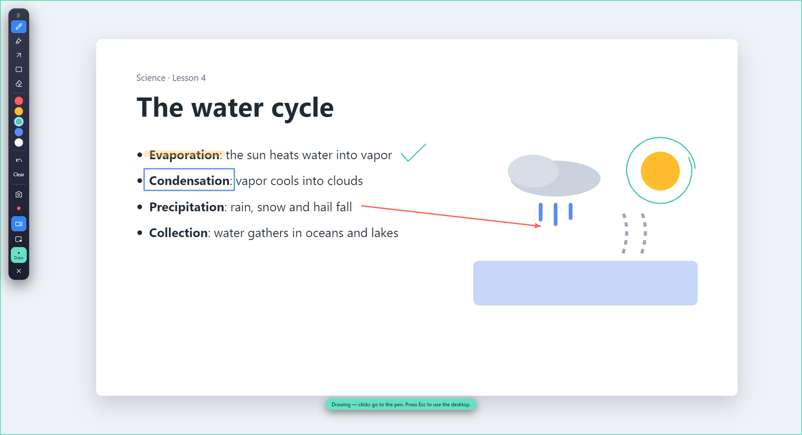

Today's lesson
Draw right on your screen.
Screen Pen puts a pen, highlighter, arrows and boxes over your real Windows desktop. Mark it up, then save a screenshot or record the whole lesson.
See it on a real screen
A sample lesson slide marked up with Screen Pen's highlighter, box, arrow and pen. The toolbar sits on the left edge; the green border means drawing mode is on.

What's in the pencil case
Everything runs on your PC. Nothing is uploaded, and the toolbar stays out of your captures.
Pen, highlighter, arrow, box
Pick a tool from the draggable side toolbar and draw over any app, slide or browser tab. Five colors, plus Undo and Clear.
Clicks pass through
Press Escape and your marks stay put while clicks go back to Windows, so you can keep teaching without wiping the board.
Screenshot an area
Drag a rectangle on the frozen screen, or grab the whole display. The PNG includes your annotations.
Record with your face
Record a screen or a single window with narration, system audio and a circular camera bubble you can move to any corner.
Sharp, light recordings
Up to 1920×1080 at 30 fps, keeping your screen's shape, so high-DPI displays don't bog down.
You choose where it saves
Every capture opens Save As. Cancel and it waits in memory with a Retry save button.
Keyboard shortcuts
Switch between drawing and click-through, from any app.
Screenshot the current display with your marks.
Save the recording in progress and quit.
Leave drawing mode. Your marks stay on screen.
Set up in three steps
- Download the installerScreen-Pen-Setup.exe, about 78 MB.
- Run it and pick a folderNo Node.js or extra tools needed. Desktop and Start menu shortcuts are added for you.
- Open Screen PenThe toolbar appears on the edge of your screen. Choose Pen and start drawing.
Ready for class?
Free and MIT licensed. Install in under a minute.
Download Screen Pen